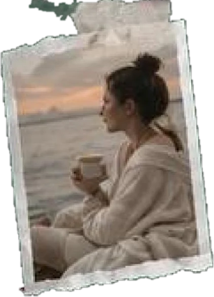
Стоимость: €29

«что мне сейчас нужно?»


Ответьте на вопросы, не анализируя слишком долго. Выбирайте то, что наиболее похоже на ваше состояние сегодня, а не на то, каким вы хотели бы себя видеть.
RASA Check-in = моё состояние сейчас. Dosha Profile = моя природная конституция.
Вопрос 01 / 09
А теперь посмотрим, каким способом именно ваше тело восстанавливается лучше всего.
Пройти большой тест на дошуYour RASA is asking for .
Возможно, вам сейчас не нужен ещё один список правил.
Вам нужно несколько дней, чтобы замедлиться, восстановить ритм и снова почувствовать своё тело.
Именно для этого создан RASA RESET.
7 days · 7 rituals · 1 return to yourself
Вступить7 дней не для того, чтобы «исправить себя». А для того, чтобы замедлиться, услышать тело и вспомнить, что хорошее самочувствие начинается с правильного отношения к себе.
Каждый день:
- питание;
- один маленький ритуал;
- телесная практика;
- восстановление;
- короткое объяснение «почему».
-
DAY 01
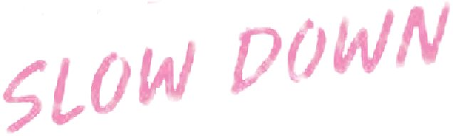
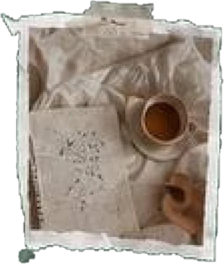
Замедлиться и выйти из режима постоянной спешки. Мягко переключить внимание с внешнего мира на тело, дыхание и собственное состояние.
Ритуал:
- лёгкий завтрак
- 5 минут дыхания
- прогулка без телефона
- вечерняя тишина
-
DAY 02
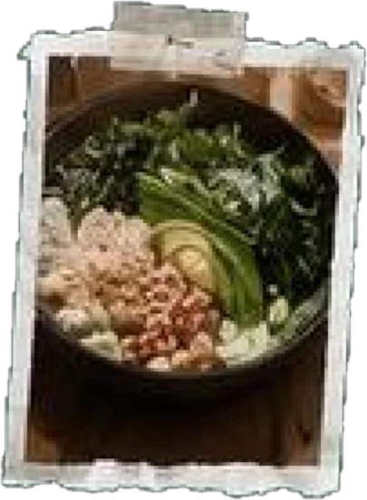
Не ограничивать, а питать. Тёплая, простая и легко усваиваемая еда, вода и восстановление контакта с настоящим голодом и насыщением.
Ритуал:
- тёплый полезный завтрак
- вода в течение дня
- осознанное питание
- отдых после еды
-
DAY 03
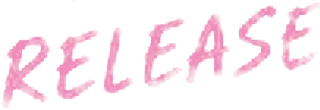
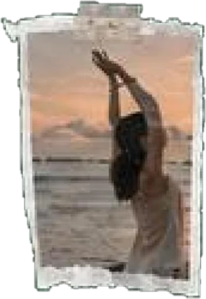
Освободить пространство — физически и эмоционально. Поддержать естественные процессы выведения, добавить мягкое движение и практики для ощущения лёгкости.
Ритуал:
- тёплая вода
- лёгкое движение
- дыхательная практика
- забота о теле
-
DAY 04
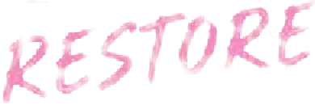
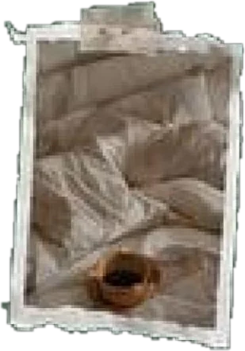
Вернуть телу то, чего ему часто не хватает больше всего, — полноценного восстановления. Сон, паузы, тепло и успокаивающие практики.
Ритуал:
- тёплый душ/ванна
- сон не менее 7–8 часов
- мягкая практика
- время на себя
-
DAY 05
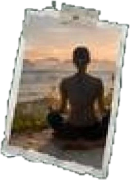
Найти свою точку равновесия. Посмотреть на питание, ритм дня, нагрузку и отдых через призму своей индивидуальной природы.
Ритуал:
- анализ текущего состояния
- сбалансированное питание
- движение
- план на неделю
-
DAY 06
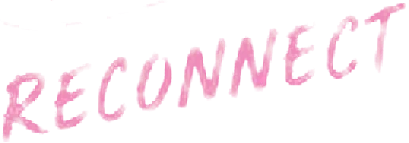
Снова услышать тело. Через дыхание, прикосновение и осознанное движение заметить его сигналы и понять, что стоит за привычной усталостью, напряжением или дискомфортом.
Ритуал:
- телесная практика
- дыхание
- прикосновение
- дневник ощущений
-
DAY 07
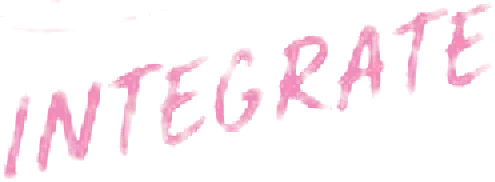
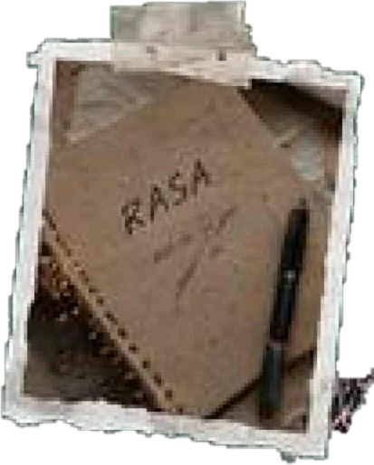
Не возвращаться к прежнему ритму, а забрать с собой то, что действительно работает. Собрать личный набор ритуалов RASA и создать основу для более устойчивого состояния.
Ритуал:
- подведение итогов
- создание личного набора
- план на будущее
- благодарность
-
Финальная идея:
7 дней — чтобы замедлиться, услышать тело и вспомнить, что хорошее самочувствие начинается с правильного отношения к себе.
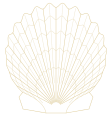
Отзывы
Запрос от меня поступил молниеносно, как только я узнала от Даши о загадочном антимарафоне. Первый день, диагностический, один из самых интересных для меня: в нём было то, что действительно зацепило и заставило задуматься.
Безусловный плюс в том, что это мягкое, плавное погружение, где мы учимся замечать себя. Нет никаких оценок, никаких домашних заданий, напряжения и ощущения спешки.
Это была неделя открытий и вдохновения, спасибо огромное Даше. У меня на седьмой день сложился некий пазл, и это только начало… Намасте!
От души спасибо за чудесный антимарафон! Я под впечатлением, получила ответы на многие интересующие меня вопросы.
Отдельное спасибо за замечательные рецепты, сливовый пирог у меня в ближайших планах. Буду ждать следующие продукты творчества нашего наставника.
P.S. Замечаний по антимарафону нет, всё было лаконично.
Спасибо за эти 7 дней погружения. Очень интересный формат, интересно выстроен подбор тем на каждый день, с удовольствием вслушивалась.
Тут действительно много о медленном, бережном знакомстве с разными отделами своего внутреннего Я. Спасибо за индивидуальный подход и поддержку на протяжении всех 7 дней.
Даша, я тебе очень благодарна за антимарафон. Ты преподнесла его мне прямо в правильный момент, хоть я и была очень занята сессией и работой.
Сон стал лучше, а самое главное, пищеварение пришло в норму. Спасибо, что напомнила: нужно себя чувствовать, прислушиваться, оберегать и не забывать поощрять.
Я дышу, живу и радуюсь. Спасибо за этот опыт.
Супер! Информация кратко, без лишнего, хорошо входит в голову на вечер.
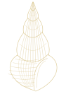
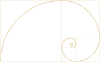
7 days · 7 rituals · 1 return to yourself
Стоимость: €29
Вступить в закрытую Telegram-группу